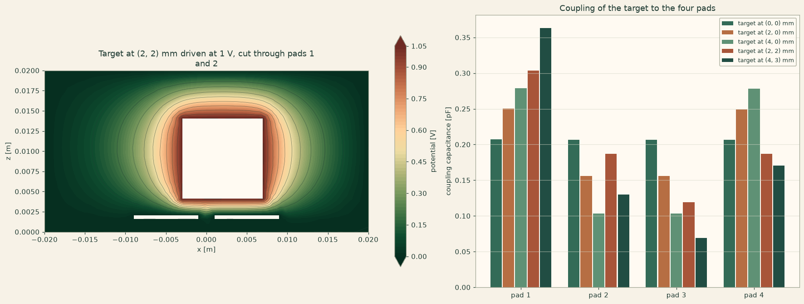
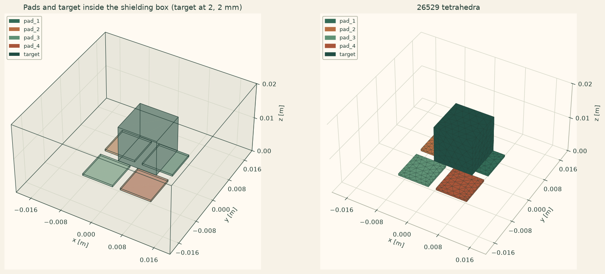

Docs › Examples › Capacitive position sensor: capacitance matrix of a five-terminal system
Electrostatics · 3D
Capacitive position sensor: capacitance matrix of a five-terminal system
Four copper pads on a circuit board sense a metal target above them; the capacitances between target and pads tell where the target is.
Run locally with OneSimulation. The example downloads are free. Running them requires an activated runtime. Runtime Alpha 0.2.1a7 · CPython 3.13 on macOS (Apple Silicon), Ubuntu 22.04 (x86-64), and Windows x64. Installation and activation · View pilot plans. Scope of the reference checks.

What it computes
OneSimulation solves the 3D electrostatic potential with quadratic Lagrange elements in the air inside a grounded shielding box read from STEP, with the FR-4 board embedded as a dielectric region, once per excited terminal at the centre and once for the target at four further positions. The charges on the terminals are the reactions of their fixed potentials and form the Maxwell capacitance matrix. The script that builds the STEP files comes with the notebook.
What it checks
The 5 x 5 capacitance matrix is symmetric to 7e-16 (reciprocity) and the charges of terminals and box balance to 6e-15 of the excited charge; the four couplings of the centred target agree within 0.4 %, and the position recovered from the pad capacitances lies within 0.04 mm of the true position for all five target positions.
Geometry
The notebook starts at the import of the CAD files capacitive_position_sensor.step, capacitive_position_sensor_board.step, capacitive_position_sensor_x2.step, capacitive_position_sensor_x2y2.step, capacitive_position_sensor_x4.step, capacitive_position_sensor_x4y3.step: STEP (AP242), readable by any CAD program, with the names of the faces that the boundary conditions use. Put them next to the notebook.

The geometry script
The script capacitive_position_sensor_geometry.py builds the geometry with the CAD objects of OneSimulation and writes the files. Change a dimension there, run it, and run the notebook again.
"""Geometry of the OneSimulation example "Capacitive position sensor".
Builds the air inside a grounded shielding box (40 x 40 x 20 mm) above a printed circuit board with
the CAD objects of OneSimulation. Four square copper pads (8 x 8 x 0.5 mm, 2 mm apart) on the board
and a metal cube (10 mm) hovering 2 mm above them are cut out of the air; their faces form the
groups pad_1 ... pad_4 and target, the walls of the box the group ground. One file is written for
each lateral position of the cube: capacitive_position_sensor.step (centred) and
capacitive_position_sensor_x2.step, _x4.step, _x2y2.step, _x4y3.step (offsets in mm). The board
(FR-4, 1.6 mm) is written to capacitive_position_sensor_board.step.
"""
from onesim.cad.d3 import Box
mm = 1e-3
box, height, board, pad, copper, gap, cube, lift = (
40 * mm,
20 * mm,
1.6 * mm,
8 * mm,
0.5 * mm,
2 * mm,
10 * mm,
2 * mm,
)
centres = {"pad_1": (1, 1), "pad_2": (-1, 1), "pad_3": (-1, -1), "pad_4": (1, -1)}
for name, (dx, dy) in {
"": (0, 0),
"_x2": (2, 0),
"_x4": (4, 0),
"_x2y2": (2, 2),
"_x4y3": (4, 3),
}.items():
air = Box(
length=box, width=box, height=height, origin=(-box / 2, -box / 2, 0.0)
).named("wall")
for label, (sx, sy) in centres.items():
air = air - Box(
length=pad,
width=pad,
height=copper,
origin=(
sx * (gap + pad) / 2 - pad / 2,
sy * (gap + pad) / 2 - pad / 2,
board,
),
).named(label)
air = air - Box(
length=cube,
width=cube,
height=cube,
origin=(dx * mm - cube / 2, dy * mm - cube / 2, board + copper + lift),
).named("target")
groups = {
label: air.select(
faces=lambda face, label=label: face.id.startswith(label + ".")
)
for label in (*centres, "target", "wall")
}
air = air.grouped(ground=groups.pop("wall"), **groups)
air.save(f"capacitive_position_sensor{name}.step")
Box(length=box, width=box, height=board, origin=(-box / 2, -box / 2, 0.0)).save(
"capacitive_position_sensor_board.step"
)The notebook
The complete notebook, cell by cell. Run it to produce the figures and the comparison printout.
Capacitive sensors find a conductive object without touching it. Four square copper pads (8 mm, 2 mm apart) sit on an FR-4 circuit board (\(\varepsilon_r=4.4\), 1.6 mm thick) inside a grounded metal box of 40 x 40 x 20 mm. A metal cube of 10 mm, the target, hovers 2 mm above the pads. The five conductors (four pads and the target) and the grounded box form a five-terminal system; in the charge-free space between them the potential obeys
The charges and potentials of the terminals are linked by the Maxwell capacitance matrix, \(Q_i=\sum_j C_{ij}V_j\). Column \(j\) is found by holding terminal \(j\) at 1 V and all others at 0 V. When the target moves sideways, its coupling capacitance \(-C_{i,\mathrm{target}}\) grows for the pads it moves towards; differences of these four numbers give its position.
The air comes from the CAD file capacitive_position_sensor.step (target centred) and from ..._x2.step, ..._x4.step, ..._x2y2.step and ..._x4y3.step (target moved by those millimetres); its faces form the groups pad_1 ... pad_4 (pads in the four quadrants, counter-clockwise from \(+x,+y\)), target and ground. The board is capacitive_position_sensor_board.step. The script capacitive_position_sensor_geometry.py builds them with the CAD objects of OneSimulation.
Reference. Reciprocity requires a symmetric matrix, \(C_{ij}=C_{ji}\), and with a closed grounded box each row of the pads and the target plus the charge on the box sums to zero (Smythe, Static and Dynamic Electricity, 3rd ed., Sec. 2.15). The centred target must couple equally to all four pads by symmetry. The position estimate
(with \(C_i\) the coupling capacitance of pad \(i\)) is calibrated once at \(x=2\) mm and then compared with the true positions.
import numpy as np
from onesim.cad.d2 import Plane
from onesim.cad.exchange import load
from onesim.materials import VacuumPermittivity
from onesim.meshing import TetrahedralMesher
from onesim.numerics import Numerics
from onesim.numerics.fem import FiniteElement, Lagrange
from onesim.numerics.linear import SparseDirect
from onesim.physics.electrostatics import FixedPotential, PoissonEquation
from onesim.simulation import Problem, Simulation, regionwise
from onesim.visualization import plots, theme
theme.set()Geometry and mesh
The board is embedded in the mesh of the air. The cells are 2 mm between the pads and the target and grow towards the walls of the box.
mm = 1e-3
positions = {(0, 0): "", (2, 0): "_x2", (4, 0): "_x4", (2, 2): "_x2y2", (4, 3): "_x4y3"}
airs = {
position: load(f"capacitive_position_sensor{suffix}.step")
for position, suffix in positions.items()
}
board = load("capacitive_position_sensor_board.step")
meshes = {
position: TetrahedralMesher(
target_size=6 * mm,
minimum_size=0.5 * mm,
embedded_regions=(board,),
size_field=lambda points: np.clip(
2 * mm
+ 0.5 * np.maximum(np.max(np.abs(points[:, :2]), axis=1) - 11 * mm, 0)
+ 0.5 * np.maximum(points[:, 2] - 16 * mm, 0),
2 * mm,
6 * mm,
),
).generate(air)
for position, air in airs.items()
}
faces = airs[(2, 2)].boundaries
terminals = ("pad_1", "pad_2", "pad_3", "pad_4", "target")
view = plots.Camera(elevation=40, azimuth=-60)
fig = plots.figure(1, 2, size=(14, 6))
plots.geometry(
airs[(2, 2)],
selection={name: faces[name] for name in terminals},
labels=False,
camera=view,
title="Pads and target inside the shielding box (target at 2, 2 mm)",
ax=fig[0],
)
plots.mesh(
meshes[(2, 2)],
groups=terminals,
camera=view,
title=f"{meshes[(2, 2)].cell_count} tetrahedra",
ax=fig[1],
)
plots.show()Model
One simulation per excited terminal: the full matrix at the centred position, the target column at every position. The charge on each terminal is the reaction of its fixed potential.
eps0 = float(VacuumPermittivity().evaluate())
numerics = Numerics(
spatial=FiniteElement(element=Lagrange(order=2)), linear_solver=SparseDirect()
)
runs = [((0, 0), excited) for excited in terminals] + [
(position, "target") for position in positions if position != (0, 0)
]
models = [
PoissonEquation(
domain=airs[position].volume,
permittivity=regionwise(((board, 4.4 * eps0),), default=eps0, unit="F/m"),
charge_density=0.0,
)
for position, _ in runs
]
potentials = [
Simulation(
problem=Problem(
name="Capacitive sensor",
geometry=airs[position],
physics=(model,),
boundary_conditions=(
*(
FixedPotential(
boundary=airs[position].boundaries[name],
physics=model,
value=float(name == excited),
)
for name in terminals
),
FixedPotential(
boundary=airs[position].boundaries.ground, physics=model, value=0.0
),
),
),
mesh=meshes[position],
numerics=numerics,
)
.solve_stationary()
.field(model.potential)
for model, (position, excited) in zip(models, runs)
]Results
The capacitance matrix at the centre, its asymmetry and the charge balance, then the position of the target recovered from the four coupling capacitances.
matrix = np.array(
[
[
potential.reaction(airs[(0, 0)].boundaries[name])
for potential in potentials[:5]
]
for name in terminals
]
)
print("Maxwell capacitance matrix at the centred position [pF]")
print(" " + "".join(f"{name:>11s}" for name in terminals))
for name, row in zip(terminals, matrix):
print(f"{name:10s}" + "".join(f"{1e12 * value:11.4f}" for value in row))
print(
f"largest asymmetry |C_ij - C_ji| / |C_ij|: {np.max(np.abs(matrix - matrix.T)) / np.max(np.abs(matrix - np.diag(np.diag(matrix)))):.1e}"
)
box = [
potential.reaction(airs[(0, 0)].boundaries.ground) for potential in potentials[:5]
]
print(
f"charge balance (terminals + box) / excited charge: {np.max(np.abs((matrix.sum(axis=0) + box) / np.diag(matrix))):.1e}"
)
print(
f"coupling of the centred target to the four pads [pF]: {', '.join(f'{-1e12 * value:.4f}' for value in matrix[:4, 4])}"
)
coupling = {
(0, 0): -matrix[:4, 4],
**{
position: -np.array(
[
potential.reaction(airs[position].boundaries[name])
for name in terminals[:4]
]
)
for (position, _), potential in zip(runs[5:], potentials[5:])
},
}
signal = {
position: np.array([(c[0] + c[3] - c[1] - c[2]), (c[0] + c[1] - c[2] - c[3])])
/ c.sum()
for position, c in coupling.items()
}
gain = 2 * mm / signal[(2, 0)][0]
print("true position [mm] estimated [mm] error [mm]")
for position, value in signal.items():
estimate = gain * value / mm
print(
f"({position[0]:4.1f}, {position[1]:4.1f}) ({estimate[0]:6.3f}, {estimate[1]:6.3f}) {np.hypot(*(estimate - position)):.3f}"
)Figure
The potential in a vertical cut through two pads when the target is driven, and the four coupling capacitances for the five positions.
fig = plots.figure(1, 2, size=(16, 6))
plots.section(
potentials[7],
plane=Plane(origin=(0, 5 * mm, 0), normal=(0, 1, 0)),
limits=(0, 1),
contours=11,
subdivisions=2,
label="potential [V]",
xlimits=(-20 * mm, 20 * mm),
ylimits=(0, 20 * mm),
xlabel="x [m]",
ylabel="z [m]",
title="Target at (2, 2) mm driven at 1 V, cut through pads 1 and 2",
ax=fig[0],
)
plots.bars(
[f"pad {i}" for i in range(1, 5)],
{f"target at ({x}, {y}) mm": 1e12 * coupling[(x, y)] for x, y in positions},
ylabel="coupling capacitance [pF]",
title="Coupling of the target to the four pads",
ax=fig[1],
)
plots.show()Going further
Raise the target in capacitive_position_sensor_geometry.py to see the sensitivity fall with the gap; add a guard ring around the pads; or replace the cube by a finger-shaped dielectric body to model a touch sensor.